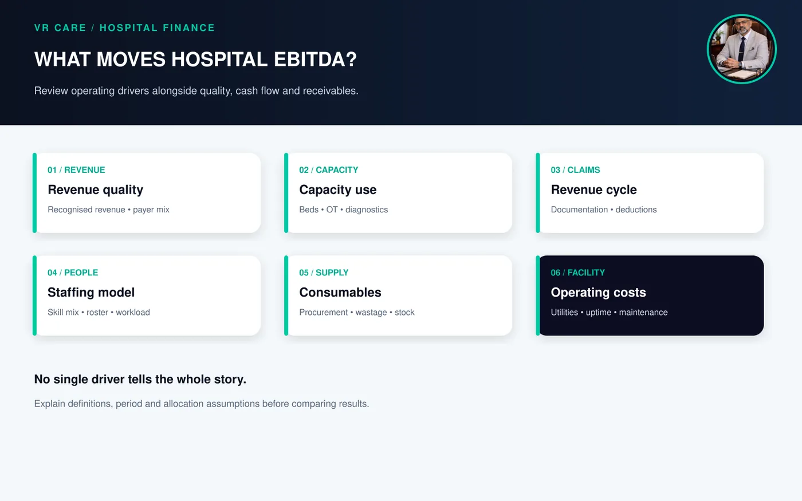
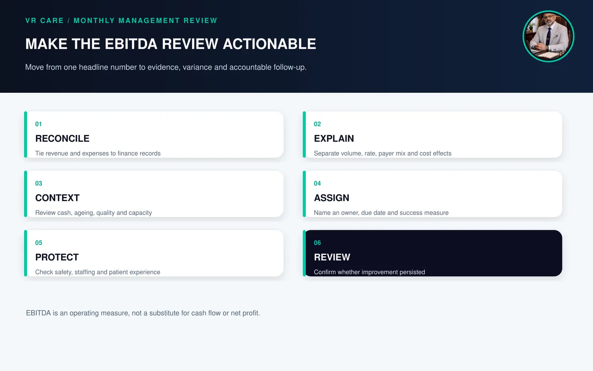

Hospital EBITDA: A Practical Guide to Measuring Hospital Operating Performance
By Afzal Shaikh · Hospital Operations & Management Consultant
Hospital EBITDA means earnings before interest, taxes, depreciation and amortisation. It is used to view operating performance before financing costs, tax and non-cash depreciation or amortisation. A basic formula is EBITDA = revenue from operations − operating expenses before interest, tax, depreciation and amortisation, following the hospital’s stated accounting presentation. EBITDA margin = EBITDA ÷ revenue from operations × 100. The measure is meaningful only when the reporting period, entity, classifications and adjustments are defined consistently.
Why hospital leaders track EBITDA
A hospital can show high billing and still have weak operating performance. Staffing, outsourced services, drugs and consumables, utilities, maintenance, payer deductions, low utilisation and inefficient workflows all affect the result. EBITDA gives leadership one view of operating earnings before financing structure, tax and depreciation are considered.
It is not the same as cash in the bank, net profit, collections or distributable cash. Leaders should read it with receivables, capital expenditure, debt, taxes, cash flow and payment timing. The useful questions are: How was it calculated? Which services contributed? Which costs are controllable? Are improvements sustainable without compromising care?
Operating performance reviews work best when clinical, nursing, finance and administrative leaders look at the same data together.
How to calculate hospital EBITDA
1. Define the entity and period
State whether the calculation covers one hospital, a group, a unit or service line, and whether it is monthly, quarterly or annual. For comparisons, keep the accounting basis and perimeter consistent or explain changes.
2. Identify operating revenue
Use revenue from operations in the hospital’s financial statements or management accounts. State how discounts, refunds, credit notes, payer deductions and other adjustments are treated. Reconcile dashboards to finance records. Gross bills, recognised revenue, claims accepted and cash collected are different events and may fall in different periods.
3. Identify operating expenses
Include expenses under the hospital’s accounting presentation, such as employee and medical-professional costs, drugs and consumables, outsourced services, utilities, repairs, administration and other operating expenses. Confirm the treatment of leases, doctor payouts, shared head-office costs and one-off items. Classification choices can affect comparisons.
4. Exclude items outside EBITDA and disclose adjustments
EBITDA is before interest, tax, depreciation and amortisation. It does not replace financial statements. If management presents “adjusted EBITDA,” list each adjustment, its value and rationale. Do not exclude recurring costs simply to improve a reported result. A SEBI disclosure format illustrates why definitions matter: it states the EBITDA components and defines EBITDA margin as EBITDA divided by revenue from operations. That disclosure formula is context-specific; hospitals should follow their applicable accounting presentation and state their own definitions clearly. SEBI disclosure format.
5. Calculate the margin
EBITDA margin (%) = EBITDA ÷ revenue from operations × 100. For example, ₹10 crore revenue and ₹1 crore EBITDA for the same hospital and period gives a 10% margin. This arithmetic example is not a target or industry benchmark.
EBITDA compared with other hospital measures
| Measure | Helps show | Does not show by itself |
|---|---|---|
| Gross billing | Bills raised under billing rules | Collections or realised revenue |
| Revenue from operations | Operating income recorded under accounting policy | Cash availability |
| EBITDA | Earnings before interest, tax, depreciation and amortisation | Capital needs, debt service or cash conversion |
| EBITDA margin | EBITDA relative to a stated denominator | Whether performance is sustainable or clinically appropriate |
| Net profit | Profit after applicable costs and charges | Operating efficiency in isolation |
| Operating cash flow | Cash generated or used in operations | Long-term asset needs without capex review |
What moves a hospital’s EBITDA?

Figure 1. Operating factors that influence hospital EBITDA
Revenue quality and capacity use
Review occupied beds, bed mix, specialty mix, theatre utilisation, diagnostic capacity, OPD-to-admission pathways and payer mix. Use the measures to understand performance, not to pressure clinicians into unnecessary care. Revenue should follow appropriate services, accurate documentation and transparent patient communication.
Revenue-cycle controls
Check whether services are documented and billed accurately, tariffs and payer terms are current, and claims and deductions have owners. Collections affect cash flow and receivables; they do not automatically equal EBITDA for the same period. See hospital accounts and revenue cycle management and TPA and insurance claims.
Cost and productivity
Review staffing by workload and shift, overtime, agency use, consumable wastage, procurement, equipment uptime, energy, outsourced-service agreements and avoidable rework. Cost reduction that creates clinical risk, staff fatigue or patient complaints is not a sound efficiency gain.
Service-line contribution
Where data is reliable, compare service-line revenue and direct costs using a documented allocation method. Separate direct costs from shared overheads and state assumptions. This helps leaders decide whether a service needs workflow improvement, capacity, pricing review or strategic support.
A practical monthly EBITDA review

Figure 2. A structured monthly EBITDA review
- Reconcile revenue and expenses to finance records; document adjustments.
- Explain variance using volume, rate, payer mix and cost drivers.
- Review occupancy, ARPOB, ALOS, OT use and claim ageing with clear definitions.
- Assign actions, owners, due dates and measures of effect.
- Review patient safety, staffing, complaints and quality alongside financial results.
- Check in later periods whether improvements persisted.
Common mistakes
- Comparing gross billing in one period with recognised revenue in another
- Mixing hospital and group results without explaining allocations
- Treating collections as EBITDA
- Excluding recurring costs as “adjustments” without disclosure
- Comparing different specialties, maturity or accounting definitions as if identical
- Copying an unverified online benchmark
- Improving the ratio through cuts that undermine staffing or patient safety
Management takeaway
Pair the headline number with source data, cash flow, quality and patient experience before acting on it.
Hospital EBITDA is useful when leaders can trace it to consistent records and explain the movements behind it. Pair it with cash flow, receivables, capital needs, quality and patient experience. The aim is a financially resilient hospital delivering appropriate, safe care.
VR Care’s hospital operations and management audit can review financial controls and operating drivers together. Related guides: hospital profitability and revenue leakage, ARPOB in hospitals and hospital KPIs.
Frequently asked questions
What is EBITDA in a hospital?
EBITDA is earnings before interest, taxes, depreciation and amortisation. It is one view of operating performance under a clearly stated accounting presentation.
How do you calculate hospital EBITDA margin?
Divide EBITDA by revenue from operations for the same entity and period, then multiply by 100. State the denominator, accounting basis and adjustments.
Is hospital EBITDA the same as net profit?
No. Net profit includes applicable costs and charges that EBITDA excludes, including interest, tax, depreciation and amortisation. Review the full financial statements for the complete result.
Is EBITDA the same as hospital cash flow?
No. Cash flow reflects cash received and paid. Receivables, payment timing, working capital, capex and debt payments affect cash availability.
What is a good EBITDA margin for a hospital in India?
There is no single target for every hospital. Scale, specialty and payer mix, maturity, occupancy, cost structure and accounting treatment vary. Compare only after definitions and peer context are verified.
Can a hospital improve EBITDA by reducing staff?
Staffing must be assessed against workload, skill mix, acuity, safety and applicable requirements. A reduction that creates unsafe coverage or poor service can damage the hospital.
Further reading
- SEBI disclosure format (example of stated EBITDA and margin definitions)
- VR Care: Hospital Operational & Management Audit
- VR Care: Hospital Profitability and Revenue Leakage
- VR Care: ARPOB in Hospitals
- VR Care: Hospital Accounts and Revenue Cycle Management
- VR Care: TPA and Insurance Claims
Photographs are AI-generated editorial illustrations and do not document a specific client assignment. The ₹10 crore example is arithmetic only and is not a target or industry benchmark.